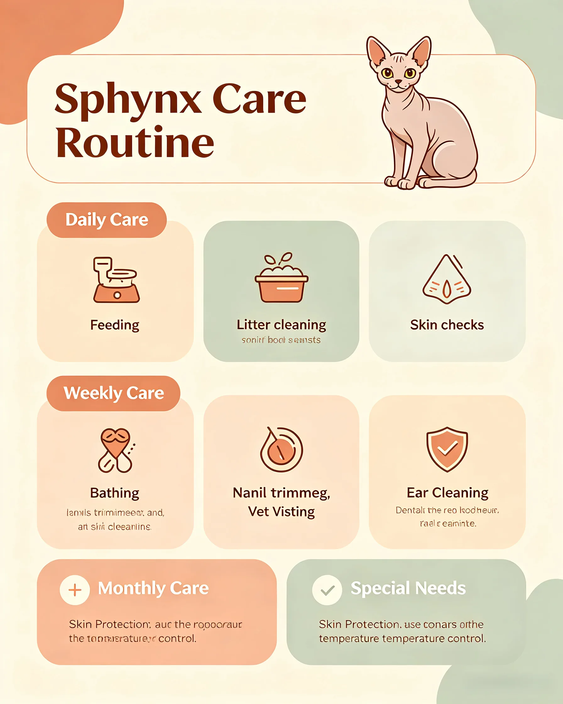
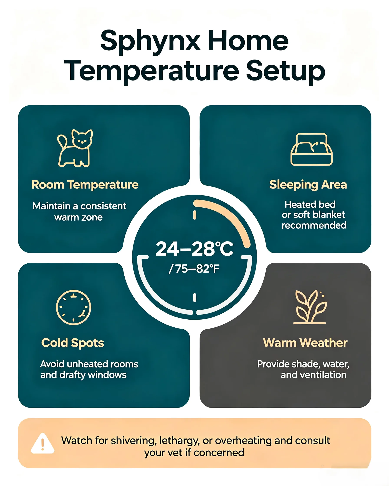
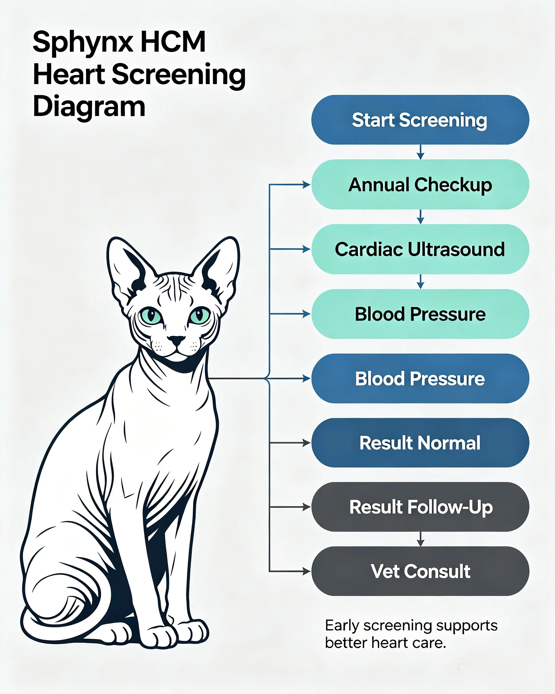
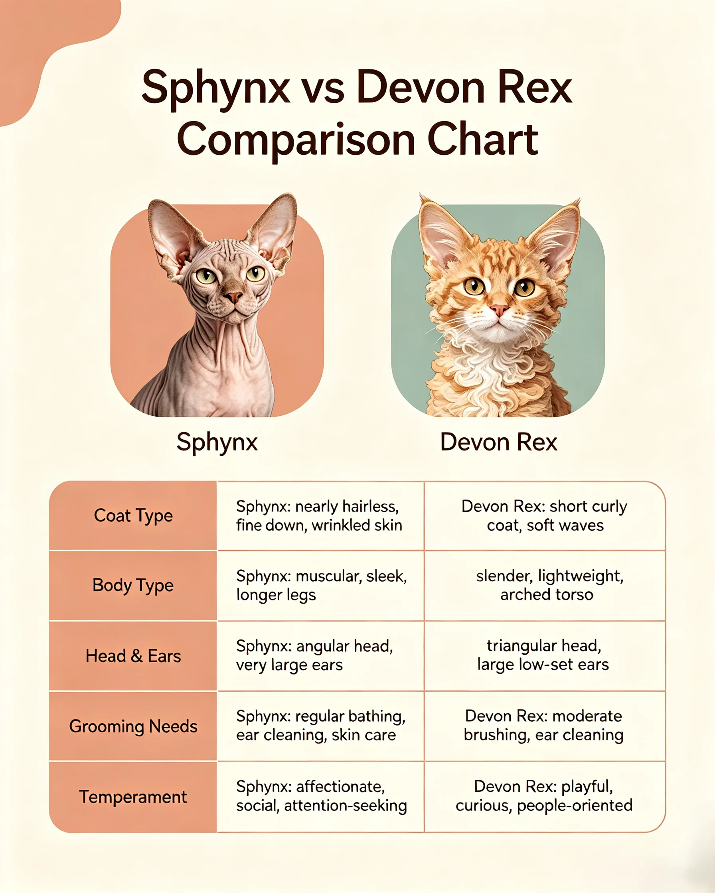

No fur. Warmer than a normal cat to the touch. Bathed weekly like a terrier. And a purr you can hear from the next room. | 2026-07-09 · MeltPet · 7 min read
✍️ By Sarah Mitchell Feline care researcher and pet health writer. 5+ years analyzing breed-specific care requirements and health data.
✅ Veterinary sources reviewed by MeltPet Team All health claims cross-checked against peer-reviewed veterinary sources. See 📚 Sources at the bottom of this guide.
Last updated: 2026-07-09

No fur, all personality — and warmer to the touch than you'd believe.
The First Time You Touch One, Your Brain Short-Circuits
Everyone has the same reaction. They see a Sphynx — maybe at a cat show, maybe at a friend's house, maybe in the window of a breeder's cattery — and their face does a thing. A flicker of "what am I looking at?" followed by either immediate fascination or reflexive recoil. There's almost no middle ground with this breed. People who love Sphynxes really love them. People who don't use words like "goblin" and "raw chicken" and "why would anyone do that to a cat."
Then they touch one. And the touch is what converts people.
A Sphynx doesn't feel the way you expect. It's not bald — it's covered in a fine, almost invisible down that gives the skin a texture closer to warm chamois leather or a heated peach. And the warmth. Sphynx cats often feel noticeably warmer to the touch than furred cats — their bodies work harder to compensate for the lack of insulating fur, and some studies suggest increased metabolic demands in hairless breeds. When you pick one up, it radiates heat like a freshly microwaved heating pad. The sensation is so unexpected compared to what your eyes are telling you that most people just stand there holding the cat, not saying much, recalibrating.
The Sphynx is not everyone's cat. But for the people it's for, no other cat will do.
Why the Baldness? It's Not a Gimmick.
The Sphynx didn't happen because someone decided to breed a hairless cat for shock value. The first hairless kitten was a random natural mutation born to a domestic shorthair in Toronto in 1966. The kitten, named Prune, was bred back to his mother and produced more hairless kittens — establishing that the mutation was a recessive gene. The breed was developed from that foundation, with periodic outcrosses to Devon Rexes and American Shorthairs to expand the gene pool. Today's Sphynx is the descendant of decades of careful breeding, not a laboratory experiment.
Physically: a Sphynx is a medium-sized cat (males 8–14 lbs, females 6–10 lbs) with a muscular, surprisingly heavy body, a rounded belly (the "pot belly" is part of the breed standard, not a sign of obesity), large bat-like ears, pronounced cheekbones, and a whip-like tail. The skin is wrinkled — particularly around the shoulders, between the ears, and on the legs. The color and pattern are visible directly on the skin: a calico Sphynx looks like someone painted a calico pattern onto warm suede. Eye color ranges from gold to green to ice-blue, and the lack of fur makes their eyes look enormous.
The hairlessness gene is recessive. Breed a Sphynx to a furred cat and all the kittens will have fur. Both parents must carry the gene to produce hairless kittens. This, combined with the breed's small gene pool, makes responsible breeding challenging — and makes it easy for irresponsible breeders to cut corners on health screening because "the demand is higher than supply."
The Care: You're Basically Grooming a Tiny, Warm Pig

The four pillars of Sphynx care: weekly bathing, ear cleaning, temperature management with sweaters, and a heated bed for year-round comfort.
This is where Sphynx ownership departs from every other cat breed. Owning a furred cat means dealing with shedding. Owning a Sphynx means dealing with oil. The sebaceous glands in a cat's skin produce sebum — the same oily substance that keeps your own skin and hair from drying out. On a normal cat, that oil coats the hair shafts. On a Sphynx, there are no hair shafts. The oil sits on the surface of the skin, accumulates, mixes with dirt, and turns into a slightly greasy film.
Weekly baths are not optional. They are the price of admission. Lukewarm water, a fragrance-free cat shampoo (human shampoo strips too aggressively), and a washcloth. Most Sphynxes learn to tolerate baths if you start them as kittens and keep the water warm and the experience calm. Pouring water directly over the head is the fastest way to create a cat who fights bath time. Use the washcloth for everything. Rinse thoroughly — leftover shampoo residue causes skin irritation. Towel dry immediately and thoroughly. A wet Sphynx goes from warm and happy to shivering in under two minutes.
Between baths: ear cleaning. No fur means no barrier against ear wax buildup. Those enormous ears collect gunk at a startling rate. Weekly ear cleaning with a vet-approved solution and cotton pads (never Q-tips — you're not trying to excavate the ear canal) keeps things clean. Nail beds also accumulate oil and need wiping. Some owners do a quick face wipe midweek with a warm, damp cloth to keep the wrinkles around the muzzle clean.
Sun protection. A Sphynx sunbathing in a window is a Sphynx getting a sunburn. Pale-skinned Sphynxes are especially vulnerable. Window film that blocks UV is the simplest solution. If your Sphynx goes outside on a harness (and it should only go outside on a harness — this breed has zero survival skills outdoors), pet-safe sunscreen on the ears and bridge of the nose is essential. Sunburn on a Sphynx isn't a minor irritation. It can lead to squamous cell carcinoma, a type of skin cancer that's aggressive and frequently fatal in cats.
Temperature management. Your thermostat is now set to 72–75°F year-round. You will accumulate a collection of fleece cat sweaters — not the Instagram kind with sequins and novelty slogans, but functional, machine-washable, close-fitting fleece that the cat wears from the first cold day of fall until spring. A Sphynx without a sweater in a 65°F room is visibly miserable — hunched, seeking laps and heating vents, shivering. Heated cat beds are popular with Sphynx owners. So are heated throws on the couch. So is the experience of your cat crawling inside your hoodie while you're wearing it and refusing to leave. The heat-seeking is constant and creative. Laptops, cable boxes, the top of the refrigerator, behind the dryer — a Sphynx maps the thermal landscape of your home more thoroughly than your energy auditor.

A Sphynx-ready home: heated bed ($30–60), fleece sweaters ($15–25 each, keep 3–4 in rotation), and a thermostat that doesn't drop below 72°F during cold months.
The Personality: Clown, Lap Heater, Conversationalist
Sphynx cat personality overview — affection, energy, vocalization, dog-like traits, independence, and compatibility with other pets
Affection
Off the charts. A Sphynx doesn't sit near you. It sits on you. Or inside your sweater. Or wrapped around your neck like a furry — sorry, unfurry — scarf. This breed has no concept of personal space and no interest in developing one.
Energy
High. Not Bengal-high — there's no destructive, climbing-the-bookshelf energy. But a Sphynx is curious, playful, and engaged with its environment in a way that surprises people who expected a delicate, sedentary ornament. Expect zoomies. Expect toys batted under the fridge. Expect a cat who meets you at the door and wants to know where you've been.
Vocalization
Moderate to high. Not Siamese-loud, but communicative. Sphynxes chirp, trill, meow conversationally, and make sounds that don't fit into any standard cat-vocalization category. They talk to you. They talk to each other. They talk to the ceiling fan.
Dog-like?
In the specific sense that they greet visitors, follow their people, and want to be involved in everything. A Sphynx is less "I will retrieve this ball for you" dog-like and more "I would like to join the dinner party conversation" dog-like. They're social in a way that feels almost performative — like they know they're the center of attention and lean into it.
Independence
Medium-low. Can handle alone time better than a Ragdoll but worse than a British Shorthair. A Sphynx left alone for 10+ hours daily is a lonely Sphynx — and a lonely Sphynx is an anxious Sphynx. Over-grooming (which, without fur, manifests as excessive licking that causes skin irritation), litter box issues, and yowling are the usual signals.
With other pets
Generally excellent. Sphynxes are pack animals at heart. They do well with other cats (Sphynx or furred — furred cats are essentially mobile heating pads to them) and cat-friendly dogs. Many Sphynx breeders recommend getting two, or getting a Sphynx and a compatible furred companion. The breed's social nature means they genuinely benefit from having another animal in the house.
Health: HCM Is the Shadow Over This Breed

Annual cardiac ultrasound (echocardiogram) is the only reliable HCM screening tool for Sphynx cats. DNA tests alone are insufficient — the disease appears to be polygenic in this breed.
Hypertrophic cardiomyopathy. You'll see those two words in every cat breed guide on this site that covers a breed affected by it — Maine Coon, Ragdoll, Bengal, and now Sphynx. But HCM in Sphynxes is different in one alarming way: it tends to appear earlier and progress faster. A Maine Coon with HCM might not show symptoms until age 6–8. A Sphynx can develop severe heart failure by age 2–3. The disease is the same — the heart muscle thickens, the chambers can't fill properly, fluid backs up into the lungs, blood clots form and throw to the legs or brain — but the timeline is compressed.
The genetic picture is messier in Sphynxes than in Maine Coons or Ragdolls. Those breeds have identified mutations on specific genes. In Sphynxes, HCM appears to be polygenic — multiple genes involved, no single test available. The ONLY reliable screening tool is an annual cardiac ultrasound (echocardiogram) performed by a board-certified veterinary cardiologist. Not a regular vet with a stethoscope. Not a breeder who says "my cats are healthy." An echocardiogram. Every year. On every breeding cat. If a breeder can't produce echocardiogram reports for both parents dated within the last 12 months, walk away. The kitten that costs $1,200 from that breeder is a bargain compared to the cat that dies of heart failure at 3 — but it doesn't feel like a bargain. It feels like grief you could have avoided.
Hereditary myopathy — a recessive muscle weakness condition specific to Sphynx/Devon Rex lines. Affected cats have generalized muscle weakness, a high-stepping gait, and difficulty swallowing. It's not fatal but it affects quality of life, and there's no treatment. The DNA test exists and is definitive. A breeder who doesn't test for it is either ignorant or gambling. Neither is acceptable.
Skin issues. Urticaria pigmentosa — a rash-like condition that appears as raised, reddish-brown bumps on the skin. It's not life-threatening but it's chronic and sometimes itchy. Solar dermatitis from sun exposure. Acne on the chin and tail from oil buildup. These are manageable with good husbandry, but they're part of the package.
Dental disease. Sphynxes have bad teeth at a higher rate than most breeds — possibly linked to the same developmental genes that affect hairlessness. Annual dental cleanings and daily brushing (good luck brushing a cat's teeth — but try) are the standard advice. Budget $400–700 for a dental under anesthesia every 1–2 years.
Lifespan: 12–15 years for a well-bred Sphynx from fully screened lines. 3–6 years for one from a breeder who skipped cardiac ultrasounds. The difference is almost entirely HCM.
What It Costs. All of It.
Estimated monthly cost of owning a Sphynx cat — food, grooming, sweaters, insurance, cardiac screening, and total
High-quality cat food
$30–50
Sphynxes eat more than most cats their size. Their metabolism runs hot — literally — and that furnace needs fuel. Expect 20–30% more food than a furred cat of the same weight.
Grooming supplies
$12–20
Cat shampoo, ear cleaner, nail wipes, washcloths, towels. No brush needed. No shedding cleanup. The line items shift but the total is similar.
Sweaters and heating
$10–25
Amortized: 3–4 fleece sweaters per year ($15–25 each, they wear out), plus the incremental heating cost of keeping your home at 73°F instead of 68°F. In a cold climate, figure $15–25/month extra on the gas bill during winter. Yes, this is a real line item.
Pet insurance
$30–65
Get the cardiac coverage. Read the fine print on hereditary conditions. The premium on a Sphynx is higher than a domestic shorthair because actuarial tables exist and Sphynxes are in them.
Annual cardiac ultrasound
$25–42
$300–500 once a year, amortized monthly. This is preventive screening, not emergency care. Most Sphynx owners do it annually for the first 5 years and every other year after that if everything stays clear.
Litter, toys, misc
$15–25
Standard cat stuff. Large litter box — Sphynxes are medium-sized cats and need room to maneuver.
Monthly total
$122–227
Higher than a domestic shorthair. Comparable to a Maine Coon or Ragdoll. The unique costs are sweaters, heating, and the annual echo.
Purchase price from a reputable breeder who screens for HCM annually, DNA-tests for hereditary myopathy, provides echocardiogram reports, and offers a health guarantee that specifically covers HCM: $1,800–3,500. Yes, that's high for a cat. A Sphynx from a breeder who skips the echo and "health guarantees" against things that won't kill the cat: $800–1,200. The $2,000 you save buys about one-third of one HCM-related cardiac emergency. Pick your price.
Who Should NOT Own a Sphynx?
Every breed guide should have a "who is this NOT for" section. For Sphynxes, it's especially important — this isn't a cat you stumble into owning. The care commitment is real, and the mismatch between expectation and reality is what fills rescue applications. If you check more than one of these boxes, pause before putting down a deposit:
6 situations where getting a Sphynx cat is probably the wrong decision — and why each one matters
You want a low-maintenance cat
A Sphynx requires more hands-on care than any other cat breed. Weekly baths, ear cleaning, nail bed wiping, sweater changes, and constant temperature monitoring. This is closer to owning a small dog than a cat.
You travel frequently or work long hours
Sphynxes are intensely social and don't handle solitude well. A Sphynx left alone 10+ hours daily will develop anxiety — over-grooming to skin irritation, litter box avoidance, or depression. If you're rarely home, this is the wrong breed.
You keep your home cool (below 70°F)
A Sphynx in a cold house is a miserable Sphynx. If you're the type who sets the thermostat to 65°F in winter and wears a hoodie indoors, your cat will spend its life shivering under blankets. The heating bill is part of the ownership cost.
You dislike cleaning or have a low tolerance for mess
Sphynxes leave oil spots on fabric. Their ears produce wax at an alarming rate. After a bath, they shake off like a dog and spray water everywhere. They're clean cats in the sense that they don't shed — but "no fur" is not "no mess."
You believe "hairless = hypoallergenic"
The allergen Fel d 1 is in saliva and skin oil, not fur. A Sphynx produces just as much of it as a furred cat. Some allergy sufferers react less to Sphynxes; others react the same or worse. Never buy a Sphynx assuming your allergies will be fine.
You're on a tight budget
Purchase price is $1,800–3,500 from a reputable breeder. Monthly costs run $122–227 minimum. An HCM-related cardiac emergency can exceed $5,000. This is an expensive breed to acquire and to maintain — the purchase price is the cheapest part.
Sphynx Daily Care Schedule
Here's what Sphynx ownership looks like on a calendar — from daily habits to annual vet visits. If this routine feels like too much, that's useful information:
Sphynx daily, weekly, monthly, and annual care schedule — tasks, time commitment, and supplies needed
⏱️ Total weekly hands-on care: approximately 60–90 minutes of active grooming, cleaning, and maintenance. This doesn't include feeding, litter scooping, or playtime.

Sphynx vs. Devon Rex at a glance. Both have enormous ears and elfin faces — but the daily care commitment is worlds apart. See the full table below.
The Devon Rex is the breed people confuse with Sphynxes because both have enormous ears, elfin faces, and unusual coats. But the Devon Rex has a coat — short, wavy, and sparse, but present. And the personality difference is significant:
Sphynx vs. Devon Rex — coat, grooming, size, personality, energy, temperature needs, health risks, and purchase price
Coat
Nearly hairless — fine down only
Short, wavy, soft — sparse in places
Grooming
Weekly baths, ear cleaning
Occasional wipe-down, less bath-reliant
Size
8–14 lbs
6–9 lbs — noticeably smaller
Personality
Social, performative, velcro
Mischievous, acrobatic, always in motion
Energy
High, interactive
Very high, independent play mixed with human interaction
Temperature needs
Must stay warm — sweaters, heated beds
Less extreme — their coat provides some insulation
Main health risk
HCM (early onset), hereditary myopathy
HCM, patellar luxation, congenital hypotrichosis
Purchase price
$1,800–3,500
$1,200–2,500
A Sphynx demands care routines closer to what you'd expect for a small dog: weekly baths, wardrobe management, thermal monitoring. A Devon Rex is closer to a standard cat with an unusual coat and a high mischief drive. If the Sphynx's grooming requirements intimidate you but you're drawn to the look, a Devon Rex might be your sweet spot.
📚 Sources
Veterinary and genetic research on Sphynx-specific health conditions.
Silverman, S., & McKenney, S. (2018).Hypertrophic cardiomyopathy in the Sphynx cat: a retrospective study of 54 cases. Journal of Feline Medicine and Surgery.
Gandolfi, B., et al. (2012).A splice variant in the TTC7B gene is associated with hereditary myopathy in Sphynx cats. Human Molecular Genetics.
Lyons, L.A., et al. (2010).The Sphynx cat: genetic analysis of hairlessness and breed development. Animal Genetics.
CFA (Cat Fanciers' Association).Sphynx Breed Standard & Health Screening Guidelines. cfa.org
TICA (The International Cat Association).Sphynx Breed Health & HCM Screening Recommendations. tica.org